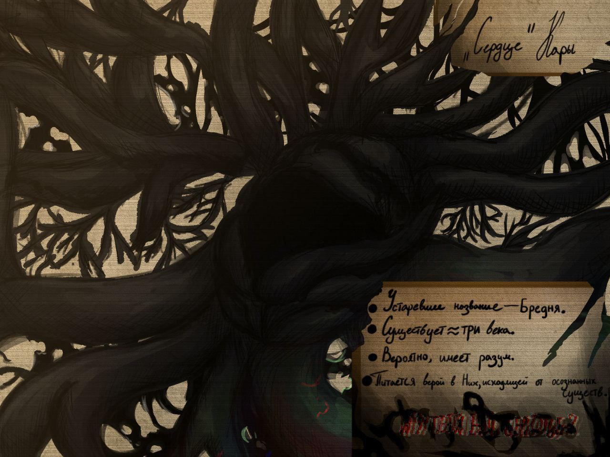

<!DOCTYPE html>
<html lang="ru">

</html>

<head>
    <title>Unburning and Collapse SMP</title>
    <link rel="stylesheet" href="sheet.css">
    <link rel="icon" type="image/x-icon" href="../img/minecraft_logo.ico">
    <meta charset="UTF-8">
    <meta name="viewport" content="width=device-width, initial-scale=1.0">
</head>

<body>

    <div class="header">
        <div class="nav-links" id="navLinks">
            <div class="dropdown">
                <button class="button" onclick="toggleMenu()">&#9776;</button>
                <div class="dropdown-content" id="dropdownMenu">
                    <a href="../chrsheets/soon.html">Кредиты</a>
                    <a href="../index.html#contact">Обратная связь</a>
                    <a href="../chrsheets/soon.html">О нас</a>
                    <a href="../gallery.html">Галерея</a>
                </div>
            </div>

            <a href="../lore.html">Лор</a>
            <a href="../character-bios.html">Анкеты персонажей</a>
            <a href="../index.html">Главная</a>
        </div>
    </div>

    <div class="post">
        

        <h1>Сердце Кары</h1>

        <p>
            · · · · ─ ·𖥸· <a href="img/secret3.jpg" style="text-decoration: none;">─</a> · · · ·
            <br><br>
            <i>
                Стоит прояснить - Кара\Бредня является именем, Сердце - материальный очаг распространения, а так же
                сознание Кары\Бредни.
            </i>
            <br><br>
            · · · · ─ ·𖥸· ─ · · · · 
            <br><br>
            Несколько столетий назад, в деревушке, где существа были праведны и дружны, нашелся глупец, что посмел
            не в лучшем свете написать о Них, в КНИГЕ! Осквернил этим поступком полки церковной бибилиотеки, навлек
            беду на всех своих родных... 
            Они не потерпят такой неучтивости, отныне спасение - вера, а приговор - голод. <br>
            Но понравилось бы вам быть проклятьем? 
            <br><br>
            Как только мыслящие существа больше не проживали на территории, Сердце погрузилось в анабиоз на
            следующие десятки лет, до момента когда в деревне снова появилась активность и жизнь. 
            <br><br>
            Бредня является разумной, однако, имеет ли она склонность к пониманию и проявлению эмоций - остается
            под вопросом. <br>
            Она является Их "ребенком". Для пропитания ей необходима вера разумных существ в её "родителя". Меняет
            виденье мира зараженного, создает иллюзию того что "все хорошо", критическое мышление пропадает.  
            Имеет основного носителя, "Сердце", но в теле живого существа. Это делает ее живучее.
            <br><br>
            · · · · ─ ·𖥸· ─ · · · ·
            <br><br>
            [𖦹๋࣭⭑] Представляет собой плесень; паразита, способного заражать питьевую воду, сельскохозяйственные
            культуры, живых существ. <br>
            Способна распространяться через влажную почву. <br>
            В организм живых созданий преимущественно попадает через зараженную пищу или воду. Инкубационный период
            длится недолго, на протяжении суток. Симптомы состоят из: <u>головокружение, усталость, забывчивость,
            пропажа аппетита, головные боли.</u> Стоит учитывать, они могут незначительно изменяться в зависимости от
            индивидуальных особенностей организма. <br>
            Ранее считалось, что вылечиться и искоренить заразу можно любыми зельями вреда, однако, они лишь
            замедляют инкубационный период, делая ситуацию хуже в будующем, возможно вызывая "<u>мутации</u>". <br>
            [𖦹๋࣭⭑] Спустя две недели после проявления первых симптомов, <u>на определенном участке тела под кожей
            образуются темные следы плесени, которая, спустя время, способна прорастать сквозь,</u> однако болезненные
            ощущения в большинстве случаев не вызывает. <br>
            <br><br>
            [&#9998;&#77955;] Неверующих недолюбливает, будет стараться навязать веру или избавиться, ко второму приходит реже. 
            <br><br>
            Официально, Кара стала называться так после собрания в церкви, когда жители Матера стали жаловаться на
            пропажи и смерти своих домашних животных. 
            <br><br>
            Однако, она упоминалась ещё после первого своего проявления между гражданами. Чаще всего, её называли
            заразой, гнилью, карой.
        </p>
    </div>

    <script>
        function toggleMenu() {
            const menu = document.getElementById("dropdownMenu");
            menu.style.display = (menu.style.display === "block") ? "none" : "block";
        }

        // Close the dropdown if the user clicks outside of it
        window.onclick = function (event) {
            if (!event.target.matches('.button')) {
                const dropdowns = document.getElementsByClassName("dropdown-content");
                for (let i = 0; i < dropdowns.length; i++) {
                    const openDropdown = dropdowns[i];
                    if (openDropdown.style.display === "block") {
                        openDropdown.style.display = "none";
                    }
                }
            }
        }

    </script>
</body>